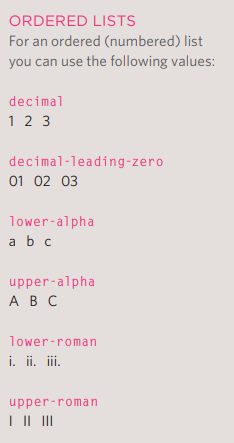
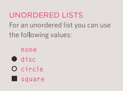

aqui seria o paragrafo onde temos a informação por extensa
To pensando ainda como vou fazer, mas vou aprender jmais com o livro doq video aula chata...
Agora estamos vendo um exemplo de palavra em negrito que é necessário o b
Agora estamos vendo um exemplo em italico
Vamos agora ver um exemplo de superscript(sup) testando
Vamos ver agora um exemplo de subscript(sub) testando
Para fazer uma quebra de linha (br /) é necessário
O conteudo a seguir do br, será quebrado,
compreende?
Quebra de linha é interessante né, mas e se quisermos criar uma linha diferenciando os temas?
Para isso podemos simplesmente usar "hr /"
Assim as coisas se tornam fáceis e melhor organizadas em uma pagina.
Elementos como br/ hr/ são chamados de Elementos vazios pelo fato de não ter conteudo.
O uso do strong denota que x palvara tem mais importancia
Exemplo:Recomendamos não comer de mais, você pode morrer!
O uso do emphasis é mostrado no navegador em italico, pois é mais sutil. Testando 1 2 3
Blockquote neste momento está escondendo uma informação que é o testando 2323
Sua função é esconder informações mas não é eficiente, pois o CSS faz isto de uma maneira mais eficiente.
Temos um elemento q que é responsável por adicionar aspas.
Mas não importancia
muito
Se você usar abreviação ou acronymo o abbr deve vir antes
Prof Hashirama construiu a aldeira da folha.
A title
attribute on the opening tag is used to specify the full term
Konohagakure é uma das vilas mais prósperas do mundo ninja.
Nosso primeiro elemento será o cite, que serve para citar algo, por exemplo Html Css Book que é onde to aprendendo.
Nosso segundo elemeto será o dfn, que usaremos na palavra que será definida a seguir por exemplo:
Buraco negro é uma zona no espaço de vazio, não há nada nem mesmo luz, apenas um buraco no espaço.
Gostou do meu trabalho? Contate-me via email.
vamos agora para insert e delet, usamos isso na ideia de corrigir uma palavra.
pior melhor ideia que ela poderia ter.
Temos o elemento s que mosta que aquilo não é mais relevante mas não deveria ser apagado deletado.
Preço da Gasolina:R$500
50% off
R$250
Uma lista organizada começa com o comando ol
Cada item que for adicionado, usaremos o li
Ovos mexidos de café
Ovos Mexidos
dl para criar a lista de definição, dt a palavra que sera definida, dd definição da palavra.
Para podermos inserir um link na página devemos usar o elemento
Redes Sociais:
Se todas as páginas estão na mesma pasta então o nome no href é apenas o nome dos arquivos.
Criei sem querer, mas criei uma referência pra imagem, depois usei o img.
Não é muito complicado, usa o href com mailto Email Patrick
Para abrirmos uma nova guia ao clicar no nosso href devemos usar o atributo target
Devemos ficar atento na estruturação, pois o target vem após o nosso site
Agora vamos aprender a linkar partes específicas do site, por exemplo se eu clicar em um botão(palavra) topo
ele vai ir para o topo da pagina mas é necessário definir o id do topo para então chamar ele depois.
Para isso ao criarmos o h1/2/3 devemos definir o id=""
Depois disso devemos criar o link do href com o id e a #
Para adicionarmos imagem usamos o elemento img.
O elemento deve carregar 2 atributos base:
Podemos também estar configurando o tamanho, basta adicionar os atributos height, width, para alinhar verticalmente, top, middle, bottom.
Exemplo:
Podemos alinhar a nossa imagem na página. align é o atributo a ser usado. Sendo possivel left ou right.
Mas posição e alinhamento será visto no CSS, que é feito de modo mais preciso.
Naruto hokage é poggers d+


Usamos o elemento figure que deverá conter a imagem e em seguida a legenda que será inserida com o uso do elemento figcaption.

The list-style-type property allows you to control the shape or style of a bullet point (also known as a marker). It can be used on rules that apply to the ol, ul, and li elements.
 You can specify an image to act as a bullet point using the list-style-image property. This property can be used on rules that apply to the ul and li elements.
If you have empty cells in your table, then you can use the empty-cells property to specify whether or not their borders should be shown.
| 1 | 2 |
| 3 |